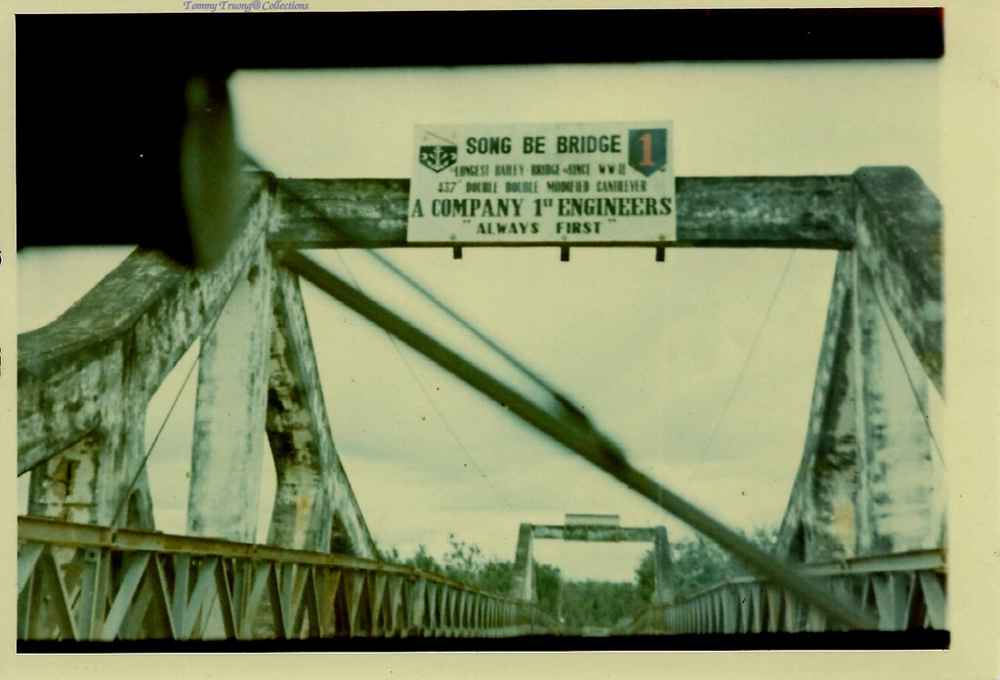
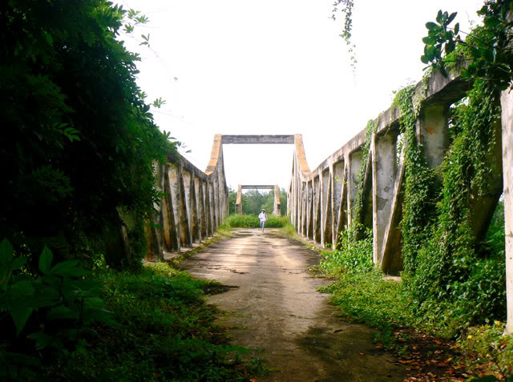
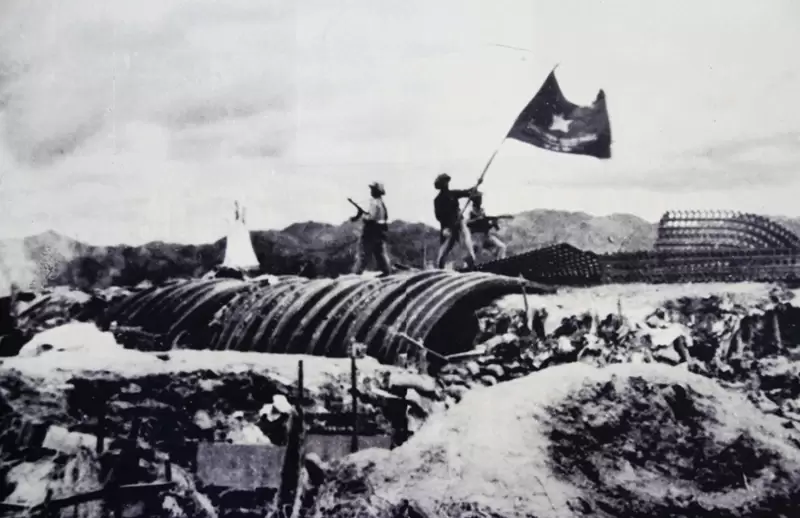
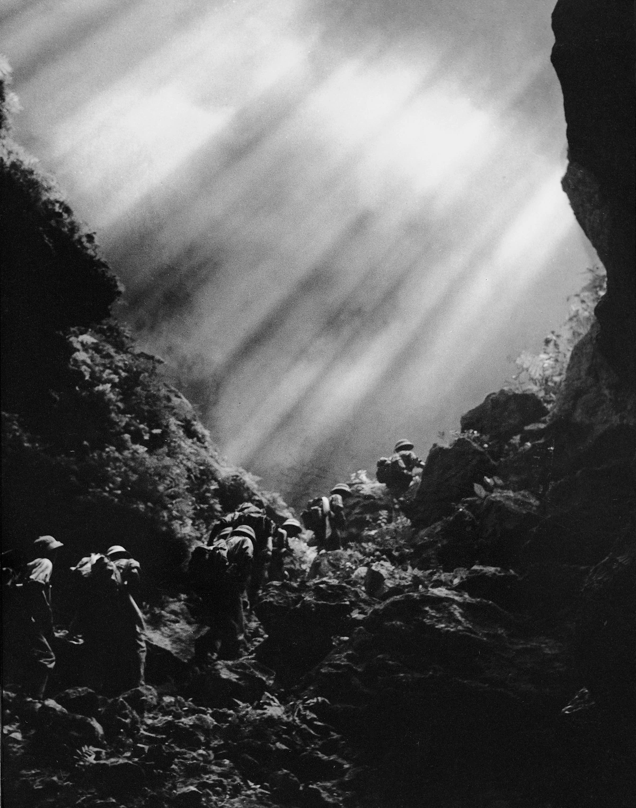
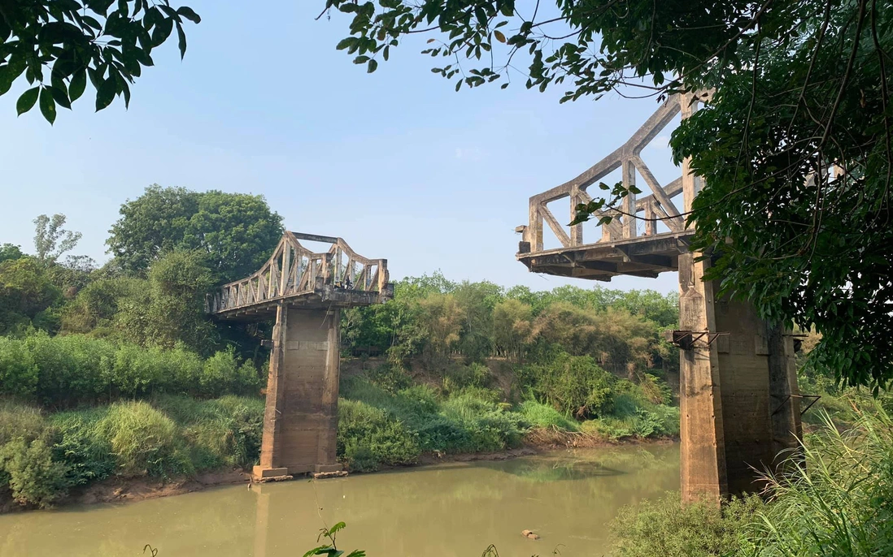

1925–1926
Khởi công xây dựng
Thực dân Pháp xây dựng cầu nhằm kết nối các đồn điền cao su và phục vụ hoạt động khai thác thuộc địa tại khu vực Đông Nam Bộ.
Di tích lịch sử cấp tỉnh Bình Dương
Chứng nhân lịch sử giữa dòng sông Bé
Trải qua gần một thế kỷ tồn tại, Cầu Sông Bé không chỉ là công trình giao thông do người Pháp xây dựng mà còn là chứng tích của những giai đoạn lịch sử đầy biến động. Dấu tích cây cầu bị đánh sập trong những ngày cuối tháng 4 năm 1975 vẫn còn hiện hữu, nhắc nhớ về tinh thần đấu tranh kiên cường của quân và dân địa phương.

Cầu Sông Bé được xây dựng vào khoảng những năm 1925–1926 dưới thời Pháp thuộc nhằm phục vụ việc vận chuyển hàng hóa và khai thác các đồn điền cao su trong khu vực. Trong hai cuộc kháng chiến, cây cầu trở thành vị trí chiến lược quan trọng, gắn với nhiều trận đánh và sự hy sinh của quân dân địa phương. Đến ngày 29 tháng 4 năm 1975, phần giữa cây cầu bị đánh sập trong quá trình rút lui của quân đối phương, tạo nên hình ảnh "Cầu Gãy" còn lưu giữ đến ngày nay như một chứng tích của chiến tranh.

Thực dân Pháp xây dựng cầu nhằm kết nối các đồn điền cao su và phục vụ hoạt động khai thác thuộc địa tại khu vực Đông Nam Bộ.

Cây cầu trở thành vị trí quân sự quan trọng và chứng kiến nhiều phong trào đấu tranh của lực lượng cách mạng cũng như công nhân các đồn điền cao su.

Cầu tiếp tục giữ vai trò chiến lược trong hệ thống giao thông và quân sự, là cửa ngõ kết nối Bình Dương với Bình Phước và Tây Nguyên.

Trong những ngày cuối của cuộc kháng chiến, phần giữa cây cầu bị đánh sập. Kể từ đó, hình ảnh "Cầu Gãy" trở thành biểu tượng lịch sử của vùng đất Sông Bé.
Không chỉ là một công trình giao thông, Cầu Sông Bé còn là chứng nhân của lịch sử, ghi dấu nhiều sự kiện quan trọng trong hai cuộc kháng chiến và góp phần giáo dục truyền thống yêu nước cho các thế hệ hôm nay.
Ghi dấu những sự kiện quan trọng trong lịch sử đấu tranh của dân tộc.
Là một trong những cây cầu bê tông cốt thép tiêu biểu được xây dựng từ thời Pháp thuộc còn lưu giữ dấu tích.
Là địa điểm giúp thế hệ trẻ tìm hiểu về lịch sử địa phương và truyền thống yêu nước.
Trở thành biểu tượng của vùng đất Sông Bé và điểm đến có ý nghĩa đối với người dân địa phương.